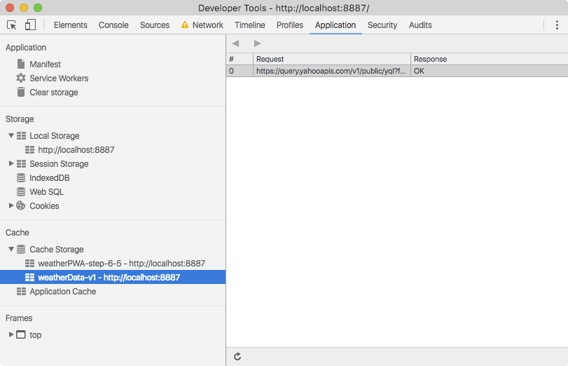

Choosing the right caching strategy for your data is vital and depends on the type of data your app presents. For example, time-sensitive data like weather or stock quotes should be as fresh as possible, while avatar images or article content can be updated less frequently.
The cache-first-then-network strategy is ideal for our app. It gets data on screen as quickly as possible, then updates that once the network has returned the latest data. In comparison to network-first-then-cache, the user does not have to wait until the fetch times out to get the cached data.
Cache-first-then-network means we need to kick off two asynchronous requests, one to the cache and one to the network. Our network request with the app doesn't need to change much, but we need to modify the service worker to cache the response before returning it.
Under normal circumstances, the cached data will be returned almost immediately providing the app with recent data it can use. Then, when the network request returns, the app will be updated using the latest data from the network.
We need to modify the service worker to intercept requests to the weather API and store their responses in the cache, so we can easily access them later. In the cache-then-network strategy, we expect the network response to be the ‘source of truth', always providing us with the most recent information. If it can't, it's OK to fail because we've already retrieved the latest cached data in our app.
In the service worker, let's add a dataCacheName so that we can separate our applications data from the app shell. When the app shell is updated and older caches are purged, our data will remain untouched, ready for a super fast load. Keep in mind, if your data format changes in the future, you'll need a way to handle that and ensure the app shell and content stay in sync.
Add the following line to the top of your service-worker.js file:
var dataCacheName = 'weatherData-v1';Next, update the activate event handler so that it doesn't delete the data cache when it cleans up the app shell cache.
if (key !== cacheName && key !== dataCacheName) {Finally, update the fetch event handler to handle requests to the data API separately from other requests.
self.addEventListener('fetch', function(e) {
console.log('[Service Worker] Fetch', e.request.url);
var dataUrl = 'https://query.yahooapis.com/v1/public/yql';
if (e.request.url.indexOf(dataUrl) > -1) {
/*
* When the request URL contains dataUrl, the app is asking for fresh
* weather data. In this case, the service worker always goes to the
* network and then caches the response. This is called the "Cache then
* network" strategy:
* https://jakearchibald.com/2014/offline-cookbook/#cache-then-network
*/
e.respondWith(
caches.open(dataCacheName).then(function(cache) {
return fetch(e.request).then(function(response){
cache.put(e.request.url, response.clone());
return response;
});
})
);
} else {
/*
* The app is asking for app shell files. In this scenario the app uses the
* "Cache, falling back to the network" offline strategy:
* https://jakearchibald.com/2014/offline-cookbook/#cache-falling-back-to-network
*/
e.respondWith(
caches.match(e.request).then(function(response) {
return response || fetch(e.request);
})
);
}
});
The code intercepts the request and checks if the URL starts with the address of the weather API. If it does we'll use fetch to make the request. Once the response is returned, our code opens the cache, clones the response, stores it in the cache, and finally returns the response to the original requestor.
Our app won't work offline quite yet. We've implemented caching and retrieval for the app shell, but even though we're caching the data, the app doesn't yet check the cache to see if it has any weather data.
As mentioned previously, the app needs to kick off two asynchronous requests, one to the cache and one to the network. The app uses the caches object available in window to access the cache and retrieve the latest data. This is an excellent example of progressive enhancement as the caches object may not be available in all browsers, and if it's not the network request should still work.
To do this, we need to:
caches object is available in the global window object.Next, we need to check if the caches object exists and request the latest data from it. Find the TODO add cache logic here comment in app.getForecast(), and then add the code below under the comment.
if ('caches' in window) {
/*
* Check if the service worker has already cached this city's weather
* data. If the service worker has the data, then display the cached
* data while the app fetches the latest data.
*/
caches.match(url).then(function(response) {
if (response) {
response.json().then(function updateFromCache(json) {
var results = json.query.results;
results.key = key;
results.label = label;
results.created = json.query.created;
app.updateForecastCard(results);
});
}
});
}
Our weather app now makes two asynchronous requests for data, one from the cache and one via an XHR. If there's data in the cache, it'll be returned and rendered extremely quickly (tens of milliseconds) and update the card only if the XHR is still outstanding. Then, when the XHR responds, the card will be updated with the freshest data direct from the weather API.
Notice how the cache request and the XHR request both end with a call to update the forecast card. How does the app know whether it's displaying the latest data? This is handled in the following code from app.updateForecastCard:
var cardLastUpdatedElem = card.querySelector('.card-last-updated');
var cardLastUpdated = cardLastUpdatedElem.textContent;
if (cardLastUpdated) {
cardLastUpdated = new Date(cardLastUpdated);
// Bail if the card has more recent data then the data
if (dataLastUpdated.getTime() < cardLastUpdated.getTime()) {
return;
}
}Every time that a card is updated, the app stores the timestamp of the data on a hidden attribute on the card. The app just bails if the timestamp that already exists on the card is newer than the data that was passed to the function.
The app should be completely offline-functional now. Save a couple of cities and press the refresh button on the app to get fresh weather data, and then go offline and reload the page.
Then go to the Cache Storage pane on the Application panel of DevTools. Expand the section and you should see the name of your app shell and data cache listed on the left-hand side. Opening the data cache should should the data stored for each city.
